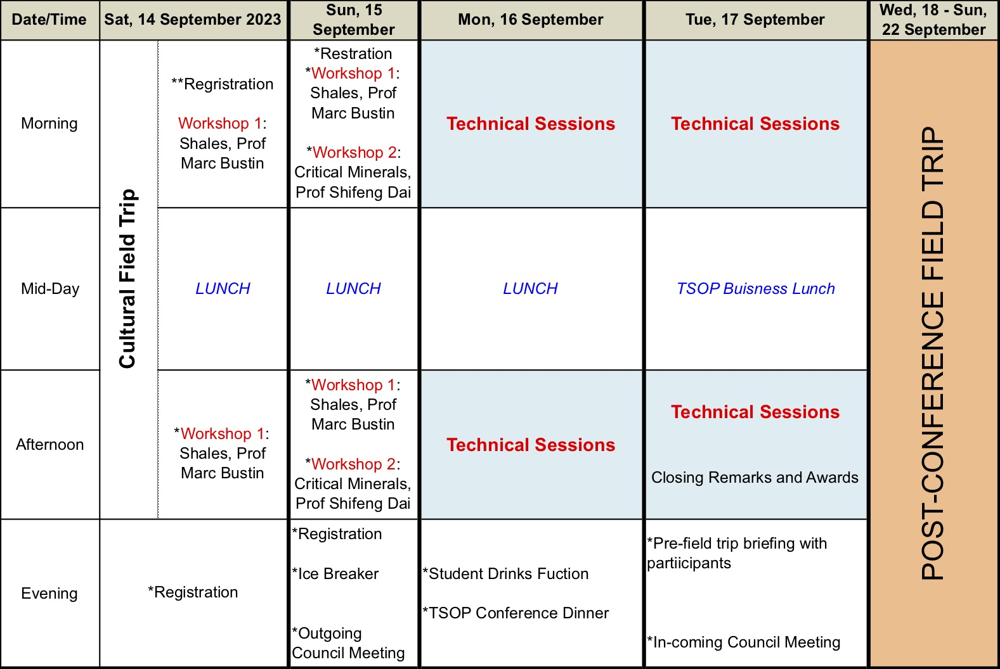

FINAL CONFERENCE PROGRAM
14-15 September 2024: Workshops and 1-day Cultural Field Trip
* Workshop #1, 14-15 September: "Shales as unconventional gas and oil reservoirs: geology and engineering”, Prof R. Marc Bustin (University of British Columbia, Canada), Dr Amanda Bustin (University of British Columbia, Canada) & Mr John Hattner (NSAI, USA)
*Workshop #2, 15 September: “Critical Minerals in Coal”, Prof Shifeng Dai (China University of Mining and Technology Beijing, China).
*Cultural Field Trip, 14 September: Still being planned but a half to three-quarter day field trip around Ulaanbaatar to introduce Mongolian culture and life.
*Ice Breaker, evening 15th of September
16-17 September 2024: Technical Session
*TSOP Conference Dinner, evening 16 September
*TSOP Business Lunch, mid-day, 17 September
*STUDENT PRESENTATION (Oral and Poster) AWARDS, 17 September
18-22 September 2024: Post-Conference Field Trip
*more information to follow: see link to special Post Conference Field trip page
All dates and times are given in Ulaabaatar Standard Time (GMT+8).
